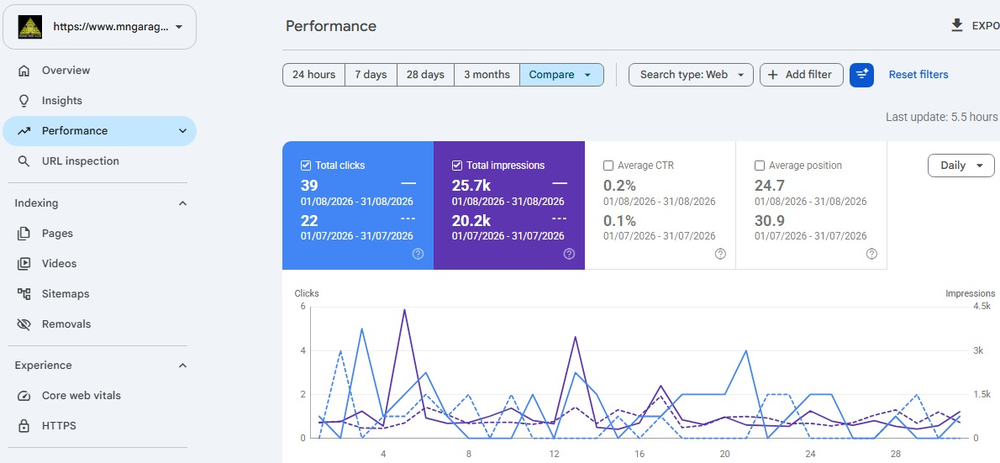
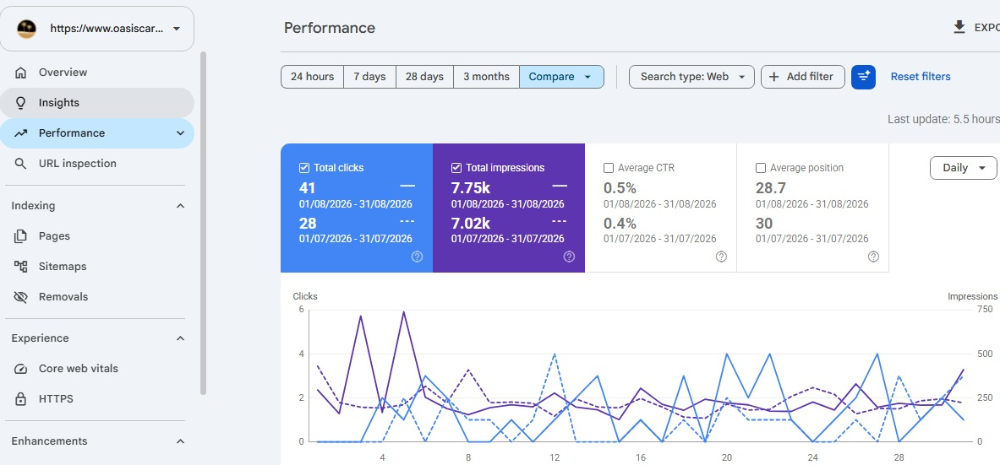

Finding the terms your customers search, then tuning your pages around them.
- Keyword research
- Competitor and content gap research
- Titles, meta descriptions and headings
- Internal linking
SEO specialist for local service businesses in the US and Canada
I'm Muhammad Awais. I work on local SEO, Google Business Profile and link building. The numbers on this page come from real client campaigns.
I'm an SEO specialist at NextKey Technologies. Most of my clients are local service businesses in the US and Canada, like garage door companies, carpet cleaners and contractors.
My work is local SEO, Google Business Profile and off-page link building. For a local business, the map pack often matters as much as the regular results, so I plan for both.
I keep it practical. I look at what is already working for your competitors, fix what needs fixing, and share the Search Console numbers so you can check the progress yourself.
Based in Pakistan. Working with clients in the US and Canada.
What I do, and what is included in each.
Finding the terms your customers search, then tuning your pages around them.
Helping you show up in the towns and cities you actually serve.
Setup and monthly management, so your listing works as hard as your website.
Building authority outside your site, slowly and in the right places.
I don't do technical SEO such as site speed or code fixes. If your site needs that, I'll tell you up front.
Search Console numbers and keywords from five client campaigns. Each set of figures covers one period, shown under the numbers.
Garage door repair and installation, Blaine, MN
Google Search Console, 1 to 31 Aug 2026

View Search Console screenshotRankings
Carpet and upholstery cleaning, Goodrich, MI
Google Search Console, 1 to 31 Aug 2026

View Search Console screenshotRankings
Window treatments, Southern California
Google Search Console, 9 Sep to 9 Oct 2026
Focus keywords
Construction and masonry, Syracuse NY
Google Search Console, 9 Sep to 9 Oct 2026
Focus keywords
Cleaning services, Los Angeles
Google Search Console, 9 Sep to 9 Oct 2026
Focus keywords
Four stages, in this order.
Keywords first, then a look at what is working for competitors nearby.
On-page changes and Google Business Profile work start together, from day one.
Citations, guest posts and link building to grow trust outside your site.
I share Search Console clicks and impressions, and adjust based on what the data shows.
No. I don't do technical SEO such as site speed or code fixes. If your site needs that, I'll tell you up front.
Mostly local service businesses in the US and Canada, such as garage door companies, carpet cleaners and contractors. I'm based in Pakistan.
I share Search Console clicks and impressions, so you can check the progress yourself. Each next step is based on what that data shows.
No. I'll tell you what's realistic for your market before you commit.
Send your website and the area you serve. I reply within a day with a short note on what's realistic.
WhatsApp+92 310 4811187